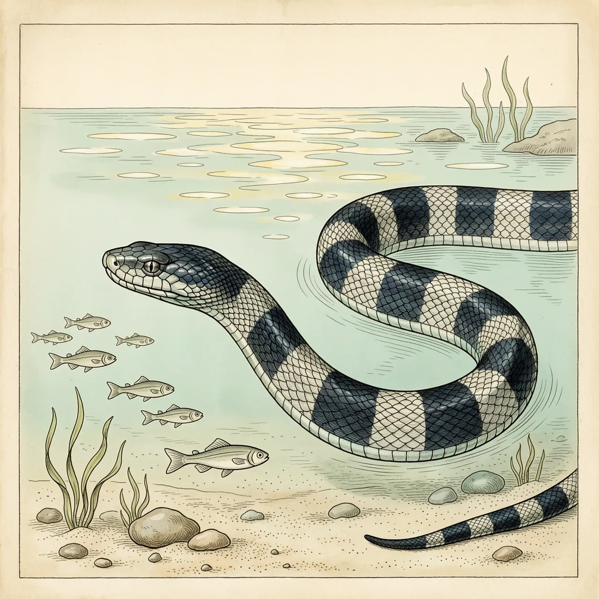
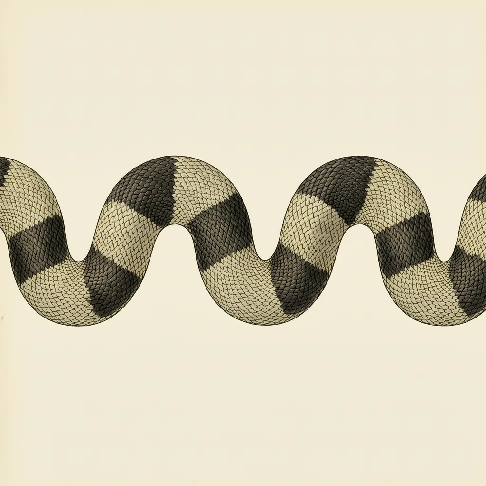

环纹海蛇是印度洋到西太平洋近岸的小型海蛇，身上深浅相间的环纹一圈圈排到尾部。它属于眼镜蛇科，性情却相对迟钝，以鱼为食，靠卵胎生直接在海上产下小蛇。它最常遇到的致命风险，是被拖网误获之后当成危险海蛇处理掉；目前保护等级仍为无危。
深浅相间的环纹一圈接一圈排向尾部，环纹海蛇在浅水里是条很好认的小蛇。它的分布从印度洋延伸到西太平洋，但落脚的地方有个共同点——都贴着岸边。环纹海蛇个头不大，就在这片近岸水域里以鱼为食；离人类的渔场近，也意味着离渔网近。
环纹海蛇的繁殖方式是卵胎生：卵在母体内发育完成，产下来的已经是成形的小蛇。对一条住在海里的蛇来说，这一步省掉了最麻烦的环节——环纹海蛇不需要上岸产卵，吃、长、生育都在近岸的水里完成。
海蛇在渔民印象里向来凶险，环纹海蛇的性情却相对迟钝，被拖网误获后挣扎得不多。麻烦在于，网里翻出一条带环纹的海蛇，常被当作危险种类直接处理掉。它属于眼镜蛇科，确实有毒，但它面临的致命风险主要来自这种误认，而不是冲着它来的捕捞。按世界自然保护联盟的评估，环纹海蛇仍被列为无危。
